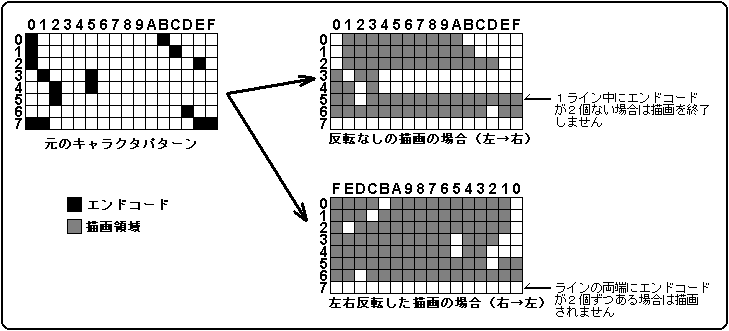
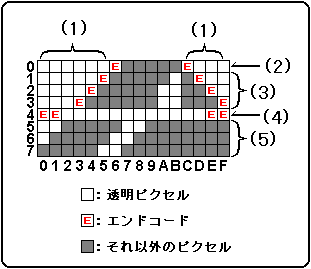

★HARDWARE Manual
★VDP1ユーザーズマニュアル
★HARDWARE Manual
★VDP1ユーザーズマニュアル
HSS | ECD | エンドコード処理 |
0 | 0 | エンドコード有効、2度目のエンドコードで横方向の描画が終了します、 |
0 | 1 | エンドコード無効、エンドコードは処理されません、 |
1かつ | 0 | エンドコード有効、2度目のエンドコードで横方向の描画が終了します、 |
1かつ | 0 | エンドコード無効、エンドコードは処理されません、 |
1 | 1 | エンドコード無効、エンドコードは処理されません、 |
カラーモード | エンドコード | |
0 | 16色（カラーバンクモード） | FH（4ビット） |
1 | 16色（ルックアップテーブルモード） | FH（4ビット） |
2 | 64色（カラーバンクモード） | FFH（8ビット） |
3 | 128色（カラーバンクモード） | FFH（8ビット） |
4 | 256色（カラーバンクモード） | FFH（8ビット） |
5 | 32768色（RGBモード） | 7FFFH（16ビット） |
図6.10(a) エンドコード処理(その1)

図6.10(b) エンドコード処理(その2)

★HARDWARE Manual
★VDP1ユーザーズマニュアル